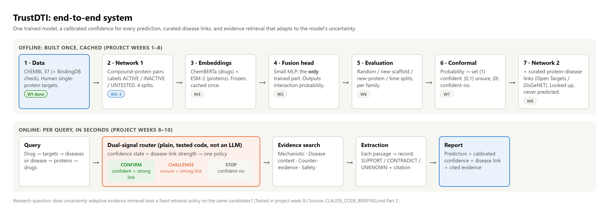
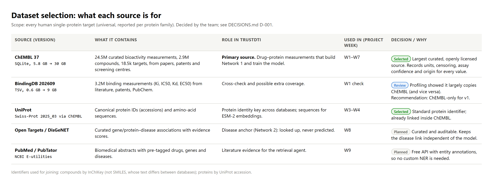
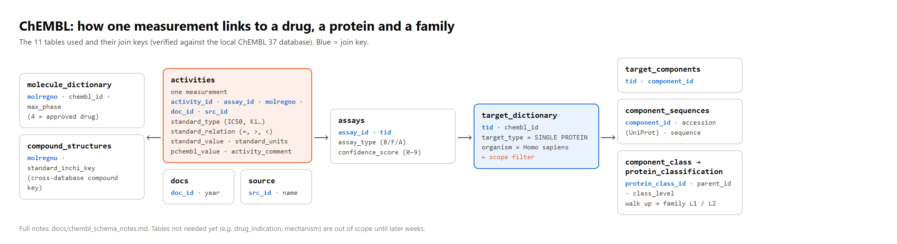
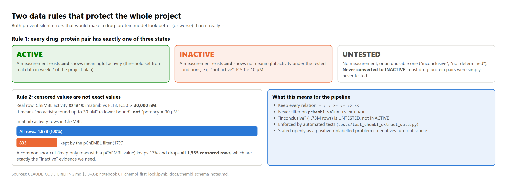
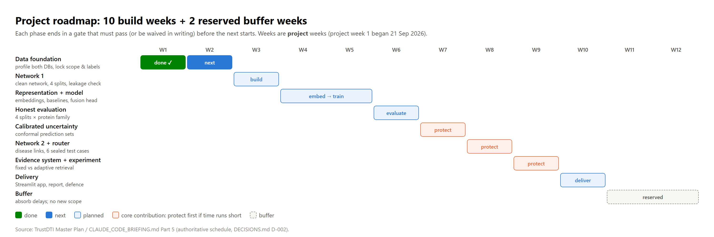

TrustDTI predicts whether an existing drug is likely to bind a human protein, attaches a calibrated confidence to each prediction, and looks up (never predicts) whether that protein is linked to a disease. It then uses both signals to decide what literature to search: supporting evidence when the model is confident, counter-evidence when it is not.

We needed openly licensed, curated drug–protein measurements with enough detail to judge quality: units, censoring, assay type and origin. ChEMBL 37 meets all four and is the primary source. BindingDB is kept as a cross-check. UniProt supplies protein identity, and the disease and literature sources come in later weeks.

A single ChEMBL measurement only becomes useful once it is joined to its assay, target, protein and family. We mapped the 11 tables involved and the keys that connect them.

| Attribute | Meaning | Why it matters |
|---|---|---|
standard_type | What was measured (IC50, Ki, Kd, EC50, Potency…) | Only some endpoints are comparable potencies |
standard_relation | Operator on the value (=, >, <) | ">" means a lower bound, not an exact value |
standard_value / units | Normalised value, e.g. 30000 nM | Meaningful only with relation and units |
pchembl_value | −log10 molar potency (7 = 100 nM) | Comparable scale; empty for censored values |
activity_comment | Free-text outcome ("Not Active", "inconclusive") | Main source of measured-inactive labels |
confidence_score | How exactly the target is assigned (0–9) | Target certainty filter |
src_id | Who deposited the record | Source affects potency and overlaps |
accession / InChIKey | UniProt protein ID / compound key | Joining across databases (not SMILES) |
docs.year | Publication year | Needed for the time-based split |
Full dictionary (21 fields, with examples): W2_06_attribute_dictionary.csv.


| Decision (dated in DECISIONS.md) | What we chose |
|---|---|
| D-001 Scope | All human single-protein targets, reported per family |
| D-002 Schedule | 10 build weeks + 2 reserved buffer weeks, with a gate at the end of each phase |
| D-003 Compute | No local GPU: embeddings on Colab/Kaggle/HPC; free open-weight LLM for the evidence stage |
| D-005 Data versions | ChEMBL 37 and BindingDB 202609, each checksum-verified |